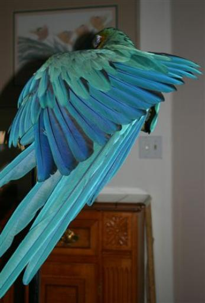

| Arielle requests that you contact us. |
"Don't Be Shy"
«- You are here:
Contact Info
Contact Info
Pet bird owners, parrot
breeders, bird trainers,
scientists, & hobbyists
interested in cognitive
speech by birds please
read the column below.
breeders, bird trainers,
scientists, & hobbyists
interested in cognitive
speech by birds please
read the column below.
| To some people the idea of talking with animals seems silly, yet a handful of scientists have expended extraordinary effort to try to with individual great apes, one of the best publicized is Francine Patterson's study of the gorilla called Koko. Dr. Patterson has the distinction of conducting the longest ongoing study in the field of interspecies communication; she continues to investigate her gorilla friend after more than 30 years on the job. Despite the studies of apes using visual communication (sign language), there has been little progress with communicating vocally with animals. One reason is that the anatomy of many creatures is not suited to duplicate the complex sounds of human speech. Lacking the ability to vocalize is an impediment. Birds are animals that naturally use sound to communicate, although humans have yet to discover the precise meaning for the messages that birds transmit. Despite some limitations because of their size, many different birds including crows, ravens, mynah birds, parrots, and a number of songbirds have the knack for reproducing words from human speech. Vocal communication between birds and humans is possible because birds are able to reproduce sounds similar to human speech. In the past, accounts of talking birds were not accepted as examples of communications, but there is evidence that the skeptics were wrong. In ancient writings, there are accounts of birds capable of conversing; of course, we can't go back a millennium or more to verify such accounts. In the 1950s, an English researcher, Len Howard, wrote about teaching songbirds to understand words; she described how she taught one bird to respond by counting out numbers spoken to the bird in English. In The Grey Parrot, Wolfgang de Grahl described incidents of birds using language appropriately. The problem is that investigators have overlooked the reports, and the result is that the insightful observations remain unexplored. The ability of parrots to use words beyond simply repeating what they hear is generally unappreciated. I began my work with Arielle in 1992. It took 18 years to arrive at my present understanding based on reading the literature and my person experimental inquiries. I'm sure there are other pet owners and parties who are exploring the same topic. However, there is no organization dealing with birds communicating using human language, so individuals are left to invent ways to discuss intelligent speech by parrot-like birds. Those factors are the problem and a reason for this site. While I do not claim to be Dr. Doolittle, I have achieved a modest degree of success communicating with a parrot-like bird. Arielle illustrates that birds have many abilities that we did not suspect. Additionally, through speech we humans can learn a great deal about birds and, perhaps, something about how they think. We may be surprised to find that they are more like us that we ever considered. Mankind has arrived at a stumbling point. In order to investigate meaningful speech by a bird, one has to conceive the possibility that birds have such an ability. For many people, accepting the idea that birds possess advanced mental abilities is a point of contention and a major obstacle to future studies. |
Do you share my interest in talking
birds?
Please contact me to tell me what
you are doing. It doesn't matter
whether you are a beginner or a
professional; I will respond to
correspondence.
Have you discovered something
unusual about your bird?
Let's see whether we have common
interests.
Does your bird say unusual things?
I'd like to know.
Do you know someone with a
talented talking bird?
Will you kindly ask the person to
contact me?
Do you have "good ears" for
decoding parrot speech or know
someone who does?
I'd like to hear from people who are
interested in learning more about
untaught, free, speech by parrots.
Send your e-mail message
to the address below for
communications amd/or to request a
call by telephone.
Mike@ParrotSpeech.com
birds?
Please contact me to tell me what
you are doing. It doesn't matter
whether you are a beginner or a
professional; I will respond to
correspondence.
Have you discovered something
unusual about your bird?
Let's see whether we have common
interests.
Does your bird say unusual things?
I'd like to know.
Do you know someone with a
talented talking bird?
Will you kindly ask the person to
contact me?
Do you have "good ears" for
decoding parrot speech or know
someone who does?
I'd like to hear from people who are
interested in learning more about
untaught, free, speech by parrots.
Send your e-mail message
to the address below for
communications amd/or to request a
call by telephone.
Mike@ParrotSpeech.com
| Contact Arielle or Mike, we love to get mail or questions about birds! Respond to Mike@ParrotSpeech.com |
| Use the form below to send a message automatically. Send your telephone number, IF you wish to converse by telephone (in the U.S.A.). |
| Arielle understands speech and speaks thoughtfully using English words, phrases, and sentences. |

|
Photo by Linda Carpenter
This site describes aspects of cognitive speech by a macaw called Arielle. Arielle is the first
contemporary bird demonstrating that a parrot possesses advanced linguistic abilities.
If you have a group such as a bird club, civic organization or a university class
interested in learning more about Arielle and the abilities of talking birds to speak
human language correctly, consider requesting an A/V presentation. Arielle attends
some function located close to her home.
Michael Dalton is interested in topics including speech as an indicator of the cognitive abilities
of birds, the development of language in talking birds, linguistics, free speech by talking birds,
people’s poor speech perception, and evidence for consciousness in talking birds derived from
an animal’s cognitive speech. Contact him to explore requirements for unusual papers,
presentations, or seminars.
contemporary bird demonstrating that a parrot possesses advanced linguistic abilities.
If you have a group such as a bird club, civic organization or a university class
interested in learning more about Arielle and the abilities of talking birds to speak
human language correctly, consider requesting an A/V presentation. Arielle attends
some function located close to her home.
Michael Dalton is interested in topics including speech as an indicator of the cognitive abilities
of birds, the development of language in talking birds, linguistics, free speech by talking birds,
people’s poor speech perception, and evidence for consciousness in talking birds derived from
an animal’s cognitive speech. Contact him to explore requirements for unusual papers,
presentations, or seminars.